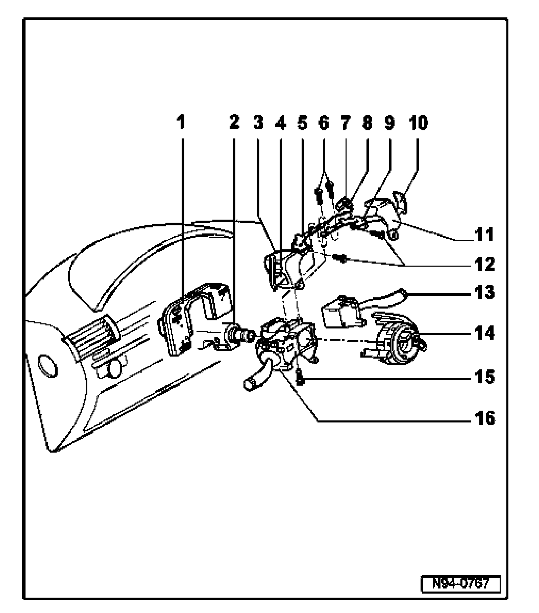

Steering Column: Locations
Steering Column Switches, Assembly
NOTE: The following components of the steering column switch are integrated and cannot be separated from each other:
- Left steering column switch trim, item 3
- Steering Wheel Tiptronic Switch -E389- on left, item 4
- Bracket, item 5
- Bracket, item 7
- Multi-pin connector for Steering Wheel Tiptronic Switch -E389-, item 8
- Bracket, item 9
- Steering Wheel Tiptronic Switch -E389- on right, item 10
- Right steering column switch trim, item 11

1. Steering Column Electronic Systems Control Module -J527-
2. Steering column
3. Left steering column switch trim
- On Steering Wheel Tiptronic Switch -E389-, on left
4. Steering Wheel Tiptronic Switch -E389- on left
5. Bracket
- On Steering Wheel Tiptronic Switch -E389-, on left
6. Screw
- For securing Steering Wheel Tiptronic Switch -E389- on left and right
7. Bracket
- For multi-pin connector for Tiptronic switch and multi-pin connector for coil connector
8. Connector for Steering Wheel Tiptronic Switch -E389-
9. Bracket
- For Steering Wheel Tiptronic Switch -E389- on right
10. Steering Wheel Tiptronic Switch -E389- on right
11. Right steering column switch trim
12. Screw
- For securing Steering Wheel Tiptronic Switch -E389- on left and right
13. Windshield Wiper/Washer Switch -E22-
14. Airbag Spiral Spring/Return Spring With Slip Ring -F138-
15. Socket head bolt
- 1.5 Nm
- For securing steering column switch
16. Turn signal switch -E2-